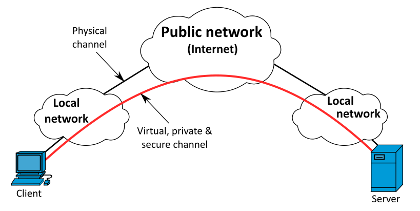
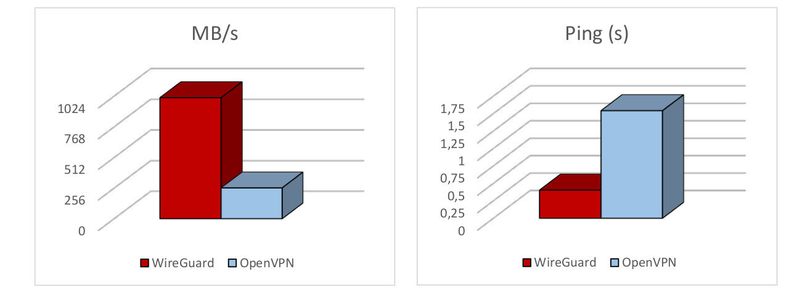
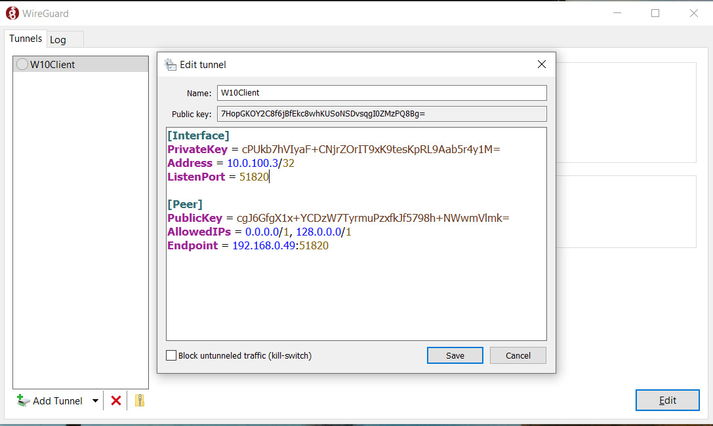
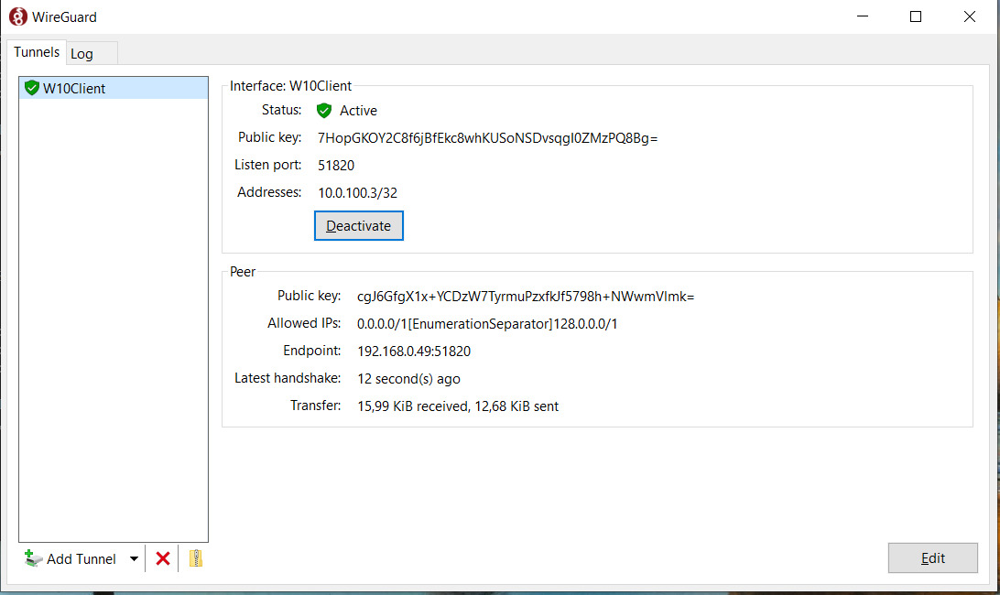
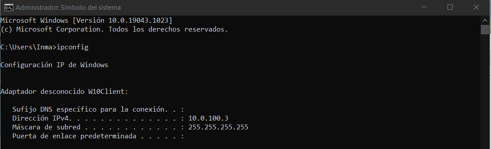

<!DOCTYPE html>
<html lang="es">

<head>
            <meta charset="utf-8">
        <meta http-equiv="X-UA-Compatible" content="IE=edge">
        <meta name="viewport" content="width=device-width, initial-scale=1">


        <title>Introducción y desarrollo de VPN con WireGuard | Javier Pérez Hidalgo</title>

        <!-- Bootstrap Core CSS -->
        <link href="/theme/css/bootstrap.min.css" rel="stylesheet">

        <!-- Custom CSS -->
        <link href="/theme/css/clean-blog.min.css" rel="stylesheet">

        <!-- Code highlight color scheme -->
            <link href="/theme/css/code_blocks/darkly.css" rel="stylesheet">


        <!-- Custom Fonts -->
        <link href="https://maxcdn.bootstrapcdn.com/font-awesome/4.7.0/css/font-awesome.min.css" rel="stylesheet" type="text/css">
        <link href='https://fonts.googleapis.com/css?family=Lora:400,700,400italic,700italic' rel='stylesheet' type='text/css'>
        <link href='https://fonts.googleapis.com/css?family=Open+Sans:300italic,400italic,600italic,700italic,800italic,400,300,600,700,800' rel='stylesheet' type='text/css'>

        <!-- HTML5 Shim and Respond.js IE8 support of HTML5 elements and media queries -->
        <!-- WARNING: Respond.js doesn't work if you view the page via file:// -->
        <!--[if lt IE 9]>
            <script src="https://oss.maxcdn.com/libs/html5shiv/3.7.0/html5shiv.js"></script>
            <script src="https://oss.maxcdn.com/libs/respond.js/1.4.2/respond.min.js"></script>
        <![endif]-->


        <meta name="description" content="A día de hoy, nos encontramos con una situación de monopolio absoluto en el mundo de las VPN, liderado por OpenVPN, que ya todos...">

        <meta name="author" content="Javier Pérez Hidalgo">

        <meta name="tags" content="VPN">
        <meta name="tags" content="WireGuard">
        <meta name="tags" content="Site-to-Site">

	                <meta property="og:locale" content="">
		<meta property="og:site_name" content="Javier Pérez Hidalgo">

	<meta property="og:type" content="article">
            <meta property="article:author" content="/author/javier-perez-hidalgo.html">
	<meta property="og:url" content="/introduccion-y-desarrollo-de-vpn-con-wireguard.html">
	<meta property="og:title" content="Introducción y desarrollo de VPN con WireGuard">
	<meta property="article:published_time" content="2021-07-01 00:00:00+02:00">
            <meta property="og:description" content="A día de hoy, nos encontramos con una situación de monopolio absoluto en el mundo de las VPN, liderado por OpenVPN, que ya todos...">

            <meta property="og:image" content="theme/images/banner-vpn.png">
</head>

<body class="article-introduccion-y-desarrollo-de-vpn-con-wireguard">

    <!-- Navigation -->
    <nav class="navbar navbar-default navbar-custom navbar-fixed-top">
        <div class="container-fluid">
            <!-- Brand and toggle get grouped for better mobile display -->
        <!--    <div class="navbar-header page-scroll">
                <button type="button" class="navbar-toggle" data-toggle="collapse" data-target="#bs-example-navbar-collapse-1">
                    <span class="sr-only">Toggle navigation</span>
                    <span class="icon-bar"></span>
                    <span class="icon-bar"></span>
                    <span class="icon-bar"></span>
                </button>-->
                <a class="navbar-brand" href="/">Inicio</a>
                <a class="navbar-brand" href="/categories">Categorías</a>
                <a class="navbar-brand" href="/authors">Sobre mí</a>

            </div>

            <!-- Collect the nav links, forms, and other content for toggling -->
            <div class="collapse navbar-collapse" id="bs-example-navbar-collapse-1">
                <ul class="nav navbar-nav navbar-right">

                </ul>
            </div>
            <!-- /.navbar-collapse -->
        </div>
        <!-- /.container -->
    </nav>

    <!-- Page Header -->
        <header class="intro-header" style="background-image: url('/theme/images/banner-vpn.png')">
        <div class="container">
            <div class="row">
                <div class="col-lg-8 col-lg-offset-2 col-md-10 col-md-offset-1">
                    <div class="post-heading">
                        <h1>Introducción y desarrollo de VPN con WireGuard</h1>
                        <span class="meta">Publicado por
                                <a href="/author/javier-perez-hidalgo.html">Javier Pérez Hidalgo</a>
                             el jue 01 julio 2021
                        </span>
                        
                    </div>
                </div>
            </div>
        </div>
    </header>

    <!-- Main Content -->
    <div class="container">
        <div class="row">
            <div class="col-lg-8 col-lg-offset-2 col-md-10 col-md-offset-1">
    <!-- Post Content -->
    <article>
        <p>A día de hoy, nos encontramos con una situación de monopolio absoluto en el mundo de las VPN, liderado por <strong>OpenVPN</strong>, que ya todos conoceréis, o incluso habréis trabajado con él.
He mencionado el término VPN, pero ¿qué es una VPN?</p>
<h2>¿ Qué es una VPN ?</h2>
<p>El término <strong>VPN</strong> viene de las siglas de <em>“Virtual Private Network”</em>, es una tecnología que permite a través de una conexión a internet, una conexión segura a otra red privada.</p>
<p>Permite, además, enviar y recibir datos como si se formase parte de la red local o privada, obteniendo así las funcionalidades que dicha red ofrece.</p>
<p>También se puede hacer referencia a una red privada virtual como un túnel, pues realmente lo que hace es crear un canal para el tráfico entre el cliente y el servidor VPN en el que su contenido corre independientemente del resto y de manera cifrada.</p>
<p>Básicamente, lo que te permite es crear una red local sin necesidad que sus integrantes estén físicamente conectados entre sí. Esto nos proporciona una flexibilidad absoluta, ya que, por ejemplo, podríamos crear una red privada con clientes de una punta del mundo, y clientes de la otra.</p>
<p>Bien, una vez conocemos lo que es una VPN y las ventajas que nos ofrece, es el momento de preguntarnos, ¿necesitamos las VPNs?</p>
<p></p>
<h2>¿ Son necesarias las VPNs ?</h2>
<p>Habitualmente, cuando navegamos por internet tan solo hacemos uso de nuestra conexión mediante el proveedor contratado, de manera que todo el tráfico de datos, es posible que sea consultado por este proveedor de internet.</p>
<p>¿Esto quiere decir que al usar una VPN nuestro tráfico no pasa por el proveedor?
La respuesta es, no. Al usar una conexión VPN, el tráfico de red sigue yendo del dispositivo al proveedor, pero de este, se dirige directo al servidor VPN, desde donde partirá al destino. Normalmente la conexión está cifrada, de modo que el proveedor realmente no sabe a qué estás accediendo.</p>
<p>Respondiendo a la primera pregunta, sí, son muy necesarias, desde la seguridad que aportan, hasta la posibilidad que nos ofrece al permitirnos el acceso a contenido restringido en una localización, pasando por el teletrabajo, que tan necesario se ha vuelto actualmente, y la posibilidad de ofrecernos confidencialidad que muchos buscamos.</p>
<p>A efectos prácticos, al hacer uso de una VPN, tu dirección IP de cara a internet, es la del servidor VPN.
Otra de sus ventajas es que al utilizar una conexión VPN, no tenemos ningún tipo de limitación, ya que funciona en todas las aplicaciones además de en un navegador.</p>
<p>Vistas las ventajas y utilidades de las VPNs, vamos a retomar un poco el contenido en sí de este proyecto.
Como he dicho al principio, hoy en día nos encontramos con una gran monopolización en el ámbito de las VPNs de código abierto, donde lidera <em>OpenVPN</em>. He experimentado la creación de un servidor y sus respectivos clientes, con dicho software, y siempre me ha parecido un proceso algo complejo y bastante lento de realizar.</p>
<p>Teniendo en cuenta estos aspectos, me interesé por <strong>WireGuard</strong>, y empecé a investigar un poco, dándome cuenta rápidamente y quedando gratamente sorprendido al ver sus sencillos procesos de configuración.</p>
<h2>¿ Qué es WireGuard ?</h2>
<p></p>
<p><em>WireGuard</em> es un protocolo de comunicación de software libre que implementa técnicas de VPN para crear conexiones seguras punto a punto en configuraciones enrutadas o puenteadas.</p>
<p>Es una aplicación <strong>multiplataforma</strong> (Linux, Windows, macOS, Android e iOS). Se presenta como una solución más rápida y sencilla que las existentes hasta la fecha, para aquellos usuarios que necesiten o deseen hacer uso de una VPN.</p>
<p>Nació en el año 2016, por lo que es una tecnología muy reciente, aún en desarrollo y no conocida por muchos. Está escrita por Jason A. Donenfeld en <strong>C++</strong> y en <strong>Go</strong>, y publicada bajo GPL.</p>
<p>Su objetivo es convertirse en un estándar en usuarios domésticos y en empresas, en lugar de <em>IPsec</em> u <em>OpenVPN</em>, que son más difíciles y más lentos, esto a consecuencia de que <em>WireGuard</em> consume muy pocos recursos del sistema.</p>
<p>Es compatible con redes IPv4 y con redes IPv6, además de poder encapsular paquetes IPv4 en IPv6 y viceversa.</p>
<p>Uno de los puntos fuertes de este software es que la configuración del cliente y servidor es exactamente igual en los diferentes sistemas operativos que soporta, lo que lo hace muy manejable y adaptable.</p>
<p>Sus creadores, aseguran una gran superioridad frente a <em>OpenVPN</em>, en aspectos como la velocidad de transmisión y la incorporación de un cifrado de siguiente nivel.</p>
<p>Hace uso del protocolo <strong>UDP</strong>, normalmente se utiliza el puerto 51820, aunque por defecto WireGuard utiliza puertos dinámicos. En mi caso, recomiendo asignar de manera estática el puerto <strong>51820</strong>, ya que es bastante más recomendable si vamos a implantar la aplicación detrás de un cortafuegos.</p>
<h3>Principales diferencias con OpenVPN</h3>
<p>Para combatir a su principal rival e incitar al cambio a los clientes, <em>WireGuard</em> se ha visto en la obligación de tener que incorporar una serie de mejoras.</p>
<p>Entre las más significativas, se encuentran las siguientes:</p>
<ul>
<li>
<p><strong>Notables mejoras de rendimiento:</strong> <em>WireGuard</em> casi toca el rendimiento del 100% de una conexión de 1 Gbps, y lo hace sin maximizar la CPU del servidor, esto, gracias a que su código está formado por unas 4 000 líneas de código, frente a las más de 100 000 que forman <em>OpenVPN</em>.</p>
</li>
<li>
<p><strong>Mejoras de ping:</strong> <em>WireGuard</em> registra un tiempo de ping que es menos de la mitad del de <em>OpenVPN</em>.</p>
</li>
</ul>
<p></p>
<ul>
<li>
<p><strong>Configuraciones:</strong> Las configuraciones de <em>WireGuard</em> son bastante más sencillas y rápidas de realizar que las de <em>OpenVPN</em>. Esto es debido a que en <em>WireGuard</em> las conexiones se realizan mediante pares de claves públicas-privadas, no mediante nodos centrales, como es el caso de <em>OpenVPN</em>.</p>
</li>
<li>
<p><strong>Más seguro:</strong> <em>WireGuard</em> utiliza métodos criptográficos más recientes, mientras que el cifrado de <em>OpenVPN</em> está un poco des-actualizado, lo que afirma su lugar como el protocolo más seguro de los dos.</p>
</li>
<li>
<p><strong>Compatibilidad con roaming:</strong> <em>WireGuard</em> está diseñado para poder realizar <em>roaming</em> de manera fácil y rápida, es decir, si nuestro dispositivo cambia de red, y lógicamente cambia de IP pública, la conexión VPN seguirá levantada porque se volverán a autenticar rápidamente con el servidor VPN, de tal forma que siempre estaremos conectados a la VPN.</p>
</li>
<li>
<p><strong>Kill-Switch:</strong> En <em>WireGuard</em> podremos habilitar el <em>Kill-Switch</em> en los dispositivos, de esta forma, si la conexión VPN se interrumpe, el propio software también se encargará de interrumpir todo el tráfico de red hasta que se vuelva a restablecer la conexión VPN, con el objetivo de que no naveguemos sin la protección que nos brinda esta VPN.</p>
</li>
</ul>
<p>En este punto, podemos hacernos una idea de todo el potencial de <em>WireGuard</em>, y de lo que promete llegar a ser en un futuro no muy lejano. Para verlo con un poco más de profundidad, y como no podía faltar, vamos a ver algunos ejemplos prácticos de este software.</p>
<h3>Conexión Site to Site</h3>
<p>En primer lugar, para mostrar el funcionamiento de <em>WireGuard</em>, voy a mostrar cómo se realiza una conexión <strong>“Site to Site”</strong> mediante comandos. Esto nos servirá para comprender mejor la comodidad que nos brinda <em>WireGuard</em>, aunque no es lo recomendable para una puesta en producción.</p>
<p>Para ello he grabado el siguiente vídeo donde se puede apreciar con todo detalle el proceso:</p>
<p><a href="https://www.youtube.com/watch?v=tRnnk_P8cyA">Demo Site to Site - WireGuard</a></p>
<h3>Escenario real para producción</h3>
<p>Además del ejemplo visto en el apartado anterior, he preparado un escenario más elaborado y que simularía una puesta en producción mucho más real.</p>
<p>Este escenario está liderado por un servidor que se encontrará en una máquina virtual con un sistema <strong>Debian 11</strong>.</p>
<p>Como clientes voy a incorporar uno con un sistema <strong>Debian 11</strong> y un cliente <strong>Windows</strong>. Adicionalmente, <em>WireGuard</em> posee una app tanto en <em>Play Store</em> para usuarios de <strong>Android</strong>, como en <em>App Store</em> para los usuarios de <strong>iOS</strong>. Dada esta posibilidad, también incorporaré un cliente de cada uno de estos tipos. Además, en todos estos dispositivos, las configuraciones las realizaré mediante ficheros, es decir, lo idóneo para una puesta en producción. Hecha esta pequeña introducción vamos a pasar con las propias configuraciones en sí.</p>
<h4>Configuración servidor Debian 11 (primera parte)</h4>
<p>En primer lugar, empezaremos viendo la configuración del servidor <em>WireGuard</em>, recordemos en una máquina <em>Debian 11</em>. Comenzaremos instalando el paquete en sí. Este paquete estará disponible en repositorios a partir de <em>Debian 11</em>, para versiones anteriores lo podremos encontrar en repositorios <em>backports</em>:</p>
<pre>
root@server:~# apt install wireguard –y
</pre>

<p>Una vez instalado deberemos habilitar el <strong>bit de forward</strong>, para permitir el reenvío de paquetes:</p>
<pre>
root@server:~# nano /etc/sysctl.conf
...
net.ipv4.ip_forward = 1
...

root@server:~# sysctl -p /etc/sysctl.conf
net.ipv4.ip_forward = 1
</pre>

<p>Hecho esto podremos dirigirnos al directorio de trabajo de <em>WireGuard</em>, que se encuentra en esta ruta:</p>
<pre>
root@server:~# cd /etc/wireguard/
</pre>

<p>Modificaremos la política de permisos en este directorio para que los ficheros que vamos a crear en los pasos posteriores, se creen de manera predeterminada con los permisos adecuados:</p>
<pre>
root@server:/etc/wireguard# umask 077
</pre>

<p>Ahora es el paso de generar nuestro par de claves públicas privadas mediante el siguiente comando que nos facilita <em>WireGuard</em>:</p>
<pre>
root@server:/etc/wireguard# wg genkey | tee serverprivatekey | wg pubkey > serverpublickey

root@server:/etc/wireguard# ls -l
total 8
-rw------- 1 root root 45 May 26 11:09 serverprivatekey
-rw------- 1 root root 45 May 26 11:09 serverpublickey

root@server:/etc/wireguard# cat serverprivatekey
wOENVR47BOYbfHFUUiYLq2H3xKOSZAe0oNNUXoHXVGk=

root@server:/etc/wireguard# cat serverpublickey
cgJ6GfgX1x+YCDzW7TyrmuPzxfkJf5798h+NWwmVlmk=
</pre>

<p>Generados dichas claves, podremos crear nuestro fichero de configuración en el servidor, lo que va a definir su comportamiento/funcionamiento. El nombre que le asignemos, será el nombre que recibirá la interfaz de red de este túnel VPN, normalmente se le asigna el nombre <strong>“wg0”</strong> seguido de la terminación <strong>“.conf”</strong> . Dicho archivo poseerá inicialmente el siguiente aspecto:</p>
<pre>
root@server:/etc/wireguard# nano wg0.conf

root@server:/etc/wireguard# cat wg0.conf
# Server config
[Interface]
Address = 10.0.100.1
PrivateKey = wOENVR47BOYbfHFUUiYLq2H3xKOSZAe0oNNUXoHXVGk=
ListenPort = 51820
PostUp = iptables -A FORWARD -i %i -j ACCEPT; iptables -A FORWARD -o %i -j ACCEPT; iptables -t nat -A POSTROUTING -o eth0 -j MASQUERADE
PostDown = iptables -D FORWARD -i %i -j ACCEPT; iptables -D FORWARD -o %i -j ACCEPT; iptables -t nat -D POSTROUTING -o eth0 -j MASQUERADE
</pre>

<p>Podemos apreciar que he añadido una nueva sección llamada <strong>Interface</strong> y dentro de ella disponemos de varios campos:</p>
<ul>
<li>
<p><strong>Address:</strong> define la dirección IP que tendrá nuestro servidor.</p>
</li>
<li>
<p><strong>PrivateKey:</strong> especificamos la clave privada que generamos anteriormente.</p>
</li>
<li>
<p><strong>ListenPort:</strong> este campo no es obligatorio, pero sí es recomendable añadirlo para asignar un puerto estático. En mi caso defino el <em>51820</em> que es el que normalmente se utiliza en <em>WireGuard</em>.</p>
</li>
<li>
<p><strong>PostUp / PostDown:</strong> definen las reglas de <em>iptables</em> que se levantarán y se eliminarán al iniciar o detener el servicio del servidor, de manera que podremos automatizar el proceso y será mucho más eficiente.</p>
</li>
</ul>
<p>Es el momento de activar el servidor y ponerlo en funcionamiento. Para ello, algo que aún no he comentado, se utiliza el comando <code>wg-quick up/down (interfaz)</code> que sirve para manejar la actividad del servidor:</p>
<pre>
root@server:/etc/wireguard# wg-quick up wg0
[#] ip link add wg0 type wireguard
[#] wg setconf wg0 /dev/fd/63
[#] ip -4 address add 10.0.100.1 dev wg0
[#] ip link set mtu 1420 up dev wg0
[#] iptables -A FORWARD -i wg0 -j ACCEPT; iptables -A FORWARD -o wg0 -j ACCEPT; iptables -t nat -A POSTROUTING -o eth0 -j MASQUERADE
</pre>

<p>Podemos ver cómo nos ha levantado el túnel, además, de haber aplicado las reglas especificadas, por lo que ahora mismo el servidor se encontraría activo. Esto se puede comprobar con el comando <code>wg</code>, que nos da un resumen del estado actual del servicio de <em>WireGuard</em>:</p>
<pre>
root@server:/etc/wireguard# wg
interface: wg0
  public key: cgJ6GfgX1x+YCDzW7TyrmuPzxfkJf5798h+NWwmVlmk=
  private key: (hidden)
  listening port: 51820
</pre>

<p>Vamos a comprobar la nueva interfaz de red, en la podemos ver que le ha asignado la IP correctamente. Como último paso, voy a activar el inicio del servicio de <em>WireGuard</em> en cada arranque del sistema. Esto lo podemos hacer porque <em>WireGuard</em> posee una unidad de <em>systemd</em>, por lo que también podríamos manejar nuestro servidor a través de ella:</p>
<pre>
root@server:/etc/wireguard# ip a show wg0
4: wg0: <POINTOPOINT,NOARP,UP,LOWER_UP> mtu 1420 qdisc noqueue state UNKNOWN group default qlen 1000
    link/none
    inet 10.0.100.1/32 scope global wg0
       valid_lft forever preferred_lft forever

root@server:/etc/wireguard# systemctl enable wg-quick@wg0
Created symlink /etc/systemd/system/multi-user.target.wants/wg-quick@wg0.service → /lib/systemd/system/wg-quick@.service.
</pre>

<h4>Configuración cliente Debian 11</h4>
<p>En este punto vamos a pasar con la configuración del primer cliente. Se trata del cliente <em>Linux</em>.</p>
<p>El inicio del proceso es exactamente el mismo que el que hemos llevado a cabo en el servidor, por lo que omitiré las explicaciones realizadas anteriormente:</p>
<pre>
root@client:~# apt install wireguard -y

root@client:~# cd /etc/wireguard/

root@client:/etc/wireguard# umask 077

root@client:/etc/wireguard# wg genkey | tee clientprivatekey | wg pubkey > clientpublickey

root@client:/etc/wireguard# ls -l
total 8
-rw------- 1 root root 45 May 26 11:12 clientprivatekey
-rw------- 1 root root 45 May 26 11:12 clientpublickey

root@client:/etc/wireguard# cat clientprivatekey
qEFD2evf0hEr/oAWCTReK7BCuRjZ+zeCu45WgSV1QlQ=

root@client:/etc/wireguard# cat clientpublickey
MVD+I0Q7Y4F8dZK6Nl5Lx7C5IDIv1h+Olnf9dBmJNns=
</pre>

<p>De nuevo, crearemos un fichero de configuración, esta vez obviamente para el cliente.</p>
<p>En él, vamos a volver a establecer la sección <strong>Interface</strong> que ya vimos en el servidor, y también añadiremos una nueva, llamada <strong>Peer</strong>. En esta sección es donde aparecerán los datos relativos al servidor:</p>
<pre>
root@client:/etc/wireguard# nano wg0.conf

root@client:/etc/wireguard# cat wg0.conf
[Interface]
Address = 10.0.100.2/32
PrivateKey = qEFD2evf0hEr/oAWCTReK7BCuRjZ+zeCu45WgSV1QlQ=
ListenPort = 51820

[Peer]
PublicKey = cgJ6GfgX1x+YCDzW7TyrmuPzxfkJf5798h+NWwmVlmk=
AllowedIPs = 0.0.0.0/0
Endpoint = 192.168.0.49:51820
</pre>

<p>Podemos ver como en la sección <em>Interface</em> los campos son iguales que en el fichero del servidor, por lo que me centraré y trataré de explicar ahora la sección <em>Peer</em>:</p>
<ul>
<li>
<p><strong>PublicKey:</strong> especificamos la clave pública del servidor.</p>
</li>
<li>
<p><strong>AllowedIPs:</strong> especificamos el rango de IPs que vamos a permitir que se nos asigne.</p>
</li>
<li>
<p><strong>Endpoint:</strong> define la dirección del servidor al que nos conectaremos.</p>
</li>
</ul>
<p>Con esto habríamos terminado la configuración del cliente <em>Linux</em>.</p>
<p>Como podemos ver es un proceso totalmente rápido y sencillo, así que tan solo faltaría iniciar el servicio y esperar a la conexión.</p>
<h4>Configuración servidor Debian 11 (añadiendo cliente Linux)</h4>
<p>Como he comentado, el cliente Linux ya se encontraría listo para poder navegar a través de nuestro servidor VPN, pero el servidor aún no lo hemos configurado para que sea capaz de tratar a este cliente, por lo que vamos a llevar a cabo dicho proceso.</p>
<p>De nuevo editaremos el fichero de configuración <strong>“wg0.conf”</strong> y en él, ahora sí, añadiremos la sección <strong>Peer</strong>.</p>
<p>Como ya hemos visto, en la parte de los clientes, tan solo vamos a tener que añadir una sección <em>Peer</em> que definirá al propio servidor al que deseemos conectarnos, pero en el caso de los servidores es distinto, ya que tendremos que crear una sección <em>Peer</em> por cada cliente que deseamos que se conecte.</p>
<p>Explicado esto, voy a enseñar el contenido del fichero del servidor tras realizar las modificaciones y añadir a este nuevo cliente <em>Linux</em>:</p>
<pre>
root@server:/etc/wireguard# nano wg0.conf

root@server:/etc/wireguard# cat wg0.conf
# Server config
[Interface]
Address = 10.0.100.1
PrivateKey = wOENVR47BOYbfHFUUiYLq2H3xKOSZAe0oNNUXoHXVGk=
ListenPort = 51820
PostUp = iptables -A FORWARD -i %i -j ACCEPT; iptables -A FORWARD -o %i -j ACCEPT; iptables -t nat -A POSTROUTING -o eth0 -j MASQUERADE
PostDown = iptables -D FORWARD -i %i -j ACCEPT; iptables -D FORWARD -o %i -j ACCEPT; iptables -t nat -D POSTROUTING -o eth0 -j MASQUERADE

# Clients configs

# Debian Client
[Peer]
Publickey = MVD+I0Q7Y4F8dZK6Nl5Lx7C5IDIv1h+Olnf9dBmJNns=
AllowedIPs = 10.0.100.2/32
PersistentKeepAlive = 25
</pre>

<p>Podemos apreciar que en esta nueva sección volvemos a tener 3 campos.</p>
<p>Nos encontramos con la clave pública esta vez del cliente, nos encontramos con el campo que definirá la dirección IP que se le va a asignar dentro de nuestro de nuestra red privada a este cliente, y nos encontramos con un nuevo campo llamado <strong>“PersistenKeepAlive”</strong> qué es opcional y se encargará de, si en más de 25 segundos no se realiza ninguna transmisión de datos entre el cliente/servidor, enviar un pequeño paquete que verificará que la conexión sigue activa, pero como digo no es obligatorio.</p>
<p>Hecho esto, aplicaremos los cambios a nuestro servidor reiniciando el servicio:</p>
<pre>
root@server:/etc/wireguard# wg-quick down wg0
[#] ip link delete dev wg0
[#] iptables -D FORWARD -i wg0 -j ACCEPT; iptables -D FORWARD -o wg0 -j ACCEPT; iptables -t nat -D POSTROUTING -o eth0 -j MASQUERADE

root@server:/etc/wireguard# wg-quick up wg0
[#] ip link add wg0 type wireguard
[#] wg setconf wg0 /dev/fd/63
[#] ip -4 address add 10.0.100.1 dev wg0
[#] ip link set mtu 1420 up dev wg0
[#] ip -4 route add 10.0.100.2/32 dev wg0
[#] iptables -A FORWARD -i wg0 -j ACCEPT; iptables -A FORWARD -o wg0 -j ACCEPT; iptables -t nat -A POSTROUTING -o eth0 -j MASQUERADE

root@server:/etc/wireguard# wg
interface: wg0
  public key: cgJ6GfgX1x+YCDzW7TyrmuPzxfkJf5798h+NWwmVlmk=
  private key: (hidden)
  listening port: 51820

peer: MVD+I0Q7Y4F8dZK6Nl5Lx7C5IDIv1h+Olnf9dBmJNns=
  allowed ips: 10.0.100.2/32
  persistent keepalive: every 25 seconds
</pre>

<p>Podemos ver como ahora, en el estado del servidor nos aparece una nueva sección que hace referencia a nuestro cliente. Irán apareciendo más secciones a medida que añadamos más clientes a nuestra red privada.</p>
<p>Ahora sí, nuestro servidor estaría preparado para permitir que el cliente <em>Linux</em> navegue a través de él, por lo que vamos a iniciar el servicio en dicho cliente y comprobar que realmente podemos navegar y tenemos acceso a internet:</p>
<pre>
root@client:/etc/wireguard# wg-quick up wg0
[#] ip link add wg0 type wireguard
[#] wg setconf wg0 /dev/fd/63
[#] ip -4 address add 10.0.100.2/32 dev wg0
[#] ip link set mtu 1420 up dev wg0
[#] wg set wg0 fwmark 51820
[#] ip -4 route add 0.0.0.0/0 dev wg0 table 51820
[#] ip -4 rule add not fwmark 51820 table 51820
[#] ip -4 rule add table main suppress_prefixlength 0
[#] sysctl -q net.ipv4.conf.all.src_valid_mark=1
[#] nft -f /dev/fd/63

root@client:/etc/wireguard# wg
interface: wg0
  public key: MVD+I0Q7Y4F8dZK6Nl5Lx7C5IDIv1h+Olnf9dBmJNns=
  private key: (hidden)
  listening port: 51820
  fwmark: 0xca6c

peer: cgJ6GfgX1x+YCDzW7TyrmuPzxfkJf5798h+NWwmVlmk=
  endpoint: 192.168.0.49:51820
  allowed ips: 0.0.0.0/0
  latest handshake: 34 seconds ago
  transfer: 156 B received, 260 B sent
</pre>

<p>Se puede apreciar cómo el cliente ya se ha conectado al servidor. Esto se debe a que han aparecido en los campos <strong>“latest handshake”</strong> y <strong>“transfer”</strong>. El primero define el tiempo que lleva en curso la conexión y el segundo la cantidad de datos que se han recibido/enviado.</p>
<p>Si visualizamos la nueva interfaz de red, podemos ver cómo nos la ha creado con la dirección IP especificada, además de comprobar que realmente poseemos conexión a internet:</p>
<pre>
root@client:/etc/wireguard# ip a show wg0
4: wg0: <POINTOPOINT,NOARP,UP,LOWER_UP> mtu 1420 qdisc noqueue state UNKNOWN group default qlen 1000
    link/none
    inet 10.0.100.2/32 scope global wg0
       valid_lft forever preferred_lft forever

root@client:/etc/wireguard# ping -c 3 www.google.es
PING www.google.es (172.217.17.3) 56(84) bytes of data.
64 bytes from mad07s09-in-f3.1e100.net (172.217.17.3): icmp_seq=1 ttl=61 time=18.9 ms
64 bytes from mad07s09-in-f3.1e100.net (172.217.17.3): icmp_seq=2 ttl=61 time=20.3 ms
64 bytes from mad07s09-in-f3.1e100.net (172.217.17.3): icmp_seq=3 ttl=61 time=22.0 ms

--- www.google.es ping statistics ---
3 packets transmitted, 3 received, 0% packet loss, time 2087ms
rtt min/avg/max/mdev = 18.946/20.402/21.957/1.231 ms
</pre>

<p>En este momento, ya habríamos terminado el proceso de añadir el cliente <em>Linux</em>, así que vamos a pasar con un nuevo cliente, es el turno de <em>Windows</em>.</p>
<h4>Configuración cliente Windows</h4>
<p>Bien, una vez hemos visto cómo se realiza una configuración cliente-servidor, hemos podido darnos cuenta de que consta de 2 partes diferenciadas, la primera llevada a cabo en el cliente, donde realizamos su configuración, y la segunda llevada a cabo en el servidor, donde es necesario añadir a este nuevo cliente. Esto es siempre así, independientemente del sistema operativo que estemos utilizando, algo que ya he comentado como una de las ventajas de <em>WireGuard</em>.</p>
<p>Una vez conocemos el proceso, seremos capaces de realizarlo en todos los clientes necesarios, así que esta parte la voy a tratar un poco más por encima, dando por hecho que ya hemos aprendido los conocimientos vistos en los apartados anteriores.</p>
<p>Para los usuarios de <em>Windows</em>, <em>WireGuard</em> tiene disponible una aplicación de escritorio que podremos descargar desde su página oficial, en la cual realizaremos de manera gráfica su configuración, además de administrar todo lo relacionado con nuestro túnel.</p>
<p>A continuación, voy a mostrar una captura de pantalla en la que visualizaremos la configuración de este nuevo cliente:</p>
<p></p>
<p>Antes de activar la conexión, añadiremos a nuestro servidor esta nueva sección <em>Peer</em> y lo reiniciaremos para aplicar cambios:</p>
<pre>
# W10 Client
[Peer]
PublicKey = 7HopGKOY2C8f6jBfEkc8whKUSoNSDvsqgI0ZMzPQ8Bg=
AllowedIPs = 10.0.100.3/32
PersistentKeepAlive = 25
</pre>

<p>Con el servidor listo, podremos activar el túnel desde nuestro cliente y automáticamente podremos visualizar la nueva interfaz con nuestra IP dentro de la red privada, además de poseer conexión a internet:</p>
<p></p>
<p></p>
<p></p>
<p>Además de esto, he preparado una pequeña demo en la que podremos ver en tiempo real tanto el servidor como el cliente, cuando estamos navegando y realizando transmisiones de datos.</p>
<p><a href="https://www.youtube.com/watch?v=oocdNpCSJy8">Demo Windows 10 - WireGuard</a></p>
<h4>Configuración cliente Android y cliente iOS</h4>
<p>Como ya sabemos perfectamente cómo crear y conectar clientes a nuestro servidor, sería una tontería volver a realizar los mismos procesos, aunque sean para clientes de otros sistemas por lo que, tanto para el cliente <em>Android</em>, como para el cliente <em>iOS</em>, he incorporado una pequeña modificación.</p>
<p>En ambas aplicaciones, disponemos de 2 métodos a la hora de realizar las configuraciones. La primera sería el método tradicional que hemos visto hasta ahora, y la segunda, trata de escanear un código QR que directamente nos importe la configuración al dispositivo.</p>
<p>Lógicamente vamos a ver este nuevo método. Lo voy a explicar por encima ya que en realidad es exactamente lo mismo, pero con la diferencia de que el proceso se realiza entero en la máquina servidor. Básicamente lo que vamos a hacer es, crear en el servidor, el fichero de configuración que deseemos obtener en nuestro cliente, y luego generar a partir de él, un <strong>código QR</strong> que al escanearlo en nuestros dispositivos nos importe la configuración. Una cosa que he omitido, aunque obviamente hay que tenerla en cuenta es que, será necesario volver a generar para cada cliente un nuevo par de claves.</p>
<p>A continuación, voy a dejar tanto el fichero para el dispositivo <em>Android</em>, como el fichero para el dispositivo <em>iOS</em>:</p>
<pre>
root@server:/etc/wireguard/client_android# cat clientAndroid.conf
[Interface]
Address = 10.0.100.4/32
PrivateKey = qF49LZiAUzPDqMSN5CJja4rH/ljkxOosdycicEa4YkE=
ListenPort = 51820

[Peer]
Publickey = cgJ6GfgX1x+YCDzW7TyrmuPzxfkJf5798h+NWwmVlmk=
AllowedIPs = 0.0.0.0/0
Endpoint = 192.168.0.49:51820
</pre>

<p>Una vez lo tenemos nos bastaría con instalar en nuestro sistema el paquete <code>qrencode</code> y generar mediante el siguiente comando, el código QR a escanear en nuestro dispositivo <em>Android</em>:</p>
<pre>
root@server:/etc/wireguard/client_android# qrencode -t ansiutf8 < clientAndroid.conf
</pre>

<pre>
root@server:/etc/wireguard/client_iOS# cat clientiOS.conf
[Interface]
Address = 10.0.100.5/32
PrivateKey = kEmpljarBs76OA9woqrX/wzKzgVn7jWIAvABblkbzmU=
ListenPort = 51820
DNS = 8.8.8.8

[Peer]
Publickey = cgJ6GfgX1x+YCDzW7TyrmuPzxfkJf5798h+NWwmVlmk=
AllowedIPs = 0.0.0.0/0
Endpoint = 192.168.0.49:51820
</pre>

<p>Generamos mediante el siguiente comando, el código QR a escanear en nuestro dispositivo <em>iOS</em>:</p>
<pre>
root@server:/etc/wireguard/client_iOS# qrencode -t ansiutf8 < clientiOS.conf
</pre>

<p>En ambos casos, únicamente nos faltaría añadir las secciones pertinentes en nuestro servidor y disfrutar de la conexión. Para ello, en el fichero <strong>“wg0.conf”</strong>, añadimos las siguientes secciones:</p>
<pre>
# Android Client
[Peer]
Publickey = MWNcn3OkGswxkQslf5MfImbidehNL8K/FnEHmTbnglE=
AllowedIPs = 10.0.100.4/32
PersistentKeepAlive = 25

# iOS Client
[Peer]
Publickey = 539i52F6p08kK/wKkNW5Wi20fTQWigpJbXfoWNZASks=
AllowedIPs = 10.0.100.5/32
PersistentKeepAlive = 25
</pre>

<p>Reiniciado el servidor y activadas las conexiones en ambos clientes, ya podríamos disfrutar de todas las ventajas de nuestra red privada. Para mostrar el funcionamiento de ambos dispositivos, he preparado al igual que anteriormente, dos vídeos en los que muestro a tiempo real el servidor y el cliente en cuestión.</p>
<p><a href="https://www.youtube.com/watch?v=yrL_ZS1-xGQ">Demo Android - WireGuard</a></p>
<p><a href="https://www.youtube.com/watch?v=Z4zdkleJfKg">Demo iOS - WireGuard</a></p>
<h2>Conclusión</h2>
<p>Espero que a través de este proyecto hayáis podido aprender y comprender todas las facilidades y ventajas que nos aporta este software, al igual que he aprendido yo.</p>
<p>También comentar que no hay que olvidar que se trata de una tecnología aún en desarrollo y que no posee todas las funcionalidades que seguramente incorporará más adelante.</p>
<p>Por mi parte, no tengo ninguna duda de que en el futuro se convertirá en una gran alternativa y un software utilizado por muchos usuarios.</p>
    </article>

        <div class="tags">
            <p><strong><a href="/tags">tags:</a></strong> <a href="/tag/vpn.html">VPN</a>, <a href="/tag/wireguard.html">WireGuard</a>, <a href="/tag/site-to-site.html">Site-to-Site</a></p>
        </div>

    <hr>

            </div>
        </div>
    </div>

    <hr>

    <!-- Footer -->
    <footer>
        <div class="container">
            <div class="row">
                <div class="col-lg-8 col-lg-offset-2 col-md-10 col-md-offset-1">
                    <ul class="list-inline text-center">
                            <li>
                                <a href="https://www.instagram.com/javierpzh/">
                                    <span class="fa-stack fa-lg">
                                        <i class="fa fa-circle fa-stack-2x"></i>
                                        <i class="fa fa-instagram fa-stack-1x fa-inverse"></i>
                                    </span>
                                </a>
                            </li>
                            <li>
                                <a href="https://twitter.com/jperezhid_">
                                    <span class="fa-stack fa-lg">
                                        <i class="fa fa-circle fa-stack-2x"></i>
                                        <i class="fa fa-twitter fa-stack-1x fa-inverse"></i>
                                    </span>
                                </a>
                            </li>
                            <li>
                                <a href="https://github.com/javierpzh">
                                    <span class="fa-stack fa-lg">
                                        <i class="fa fa-circle fa-stack-2x"></i>
                                        <i class="fa fa-github fa-stack-1x fa-inverse"></i>
                                    </span>
                                </a>
                            </li>
                            <li>
                                <a href="https://www.linkedin.com/in/javier-p%C3%A9rez-hidalgo/">
                                    <span class="fa-stack fa-lg">
                                        <i class="fa fa-circle fa-stack-2x"></i>
                                        <i class="fa fa-linkedin fa-stack-1x fa-inverse"></i>
                                    </span>
                                </a>
                            </li>
                            <li>
                                <a href="mailto:javierperezhidalgo01@gmail.com">
                                    <span class="fa-stack fa-lg">
                                        <i class="fa fa-circle fa-stack-2x"></i>
                                        <i class="fa fa-envelope-square fa-stack-1x fa-inverse"></i>
                                    </span>
                                </a>
                            </li>
                    </ul>
<p class="copyright text-muted">
    Blog creado por <a href="http://www.instagram.com/javierpzh/">Javier Pérez Hidalgo</a>,
    con la utilización de <a href="https://blog.getpelican.com/">Pelican</a>. <br />        &copy;  Javier Pérez Hidalgo
</p>                </div>
            </div>
        </div>
    </footer>

    <!-- jQuery -->
    <script src="/theme/js/jquery.min.js"></script>

    <!-- Bootstrap Core JavaScript -->
    <script src="/theme/js/bootstrap.min.js"></script>

        <!-- Custom Theme JavaScript -->
        <script src="/theme/js/clean-blog.min.js"></script>

</body>

</html>